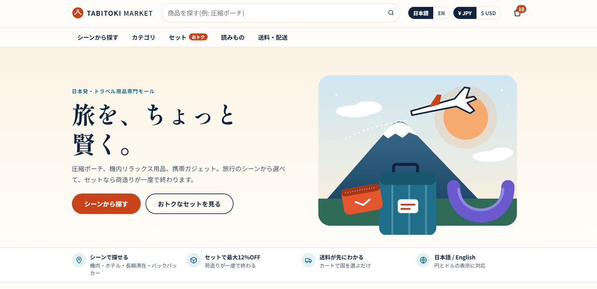
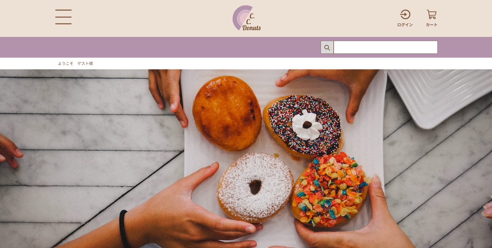

TABITOKI MARKET
日本発のトラベル用品を集めた旅行EC。日英・円/ドル切替、会員登録、在庫連動の管理画面まで実装しています。
安全面：カード番号を扱わないデモ決済
デモ：準備中（サーバーの更新後に公開）
最終更新 2026.10.23
LATEST WORKS
スクロールで世界観を体験できるLPを3作品。いずれも自主制作のデモです。
SECURITY
個人情報の流出が続く今、サイトは作って終わりにできません。安全に保ち、異変に早く気づける体制づくりまで、対応可能です。
土台は、サイトを最新の状態に保つこと。そのうえで、防御と見守りを重ねます。
「入れて終わり」ではなく、設定から報告までをセットで行います。
対策の中身は公開していません。範囲と進め方は、お打ち合わせで決めます。
安全面を相談するSERVICES
相談 → カウンセリング → 打ち合わせ → 実行。サイトの課題、安全面、AI導入まで、困りごとを一緒に解決します。
まず相談するSEO・アクセス解析（GA4）・広告運用・SNS運用（Instagram運用の経験あり）で、見つけてもらい、問い合わせにつなげます。
集客を相談するHP・LP・ECの制作と、公開後の更新・保守まで。
専門的な内容を、伝わる自然な日本語に。
繰り返し作業をAIで自動化。人の確認は残します。
現状診断から、更新しやすい形へ作り直します。
E-COMMERCE
会員登録・ログイン・カート・注文までを備えたECサイトを2作品。どちらもPHPとSQLで構成した架空のデモサイトで、演習・ご提案用です。ECはお客様の個人情報を預かるため、安全面まで含めて設計します（対策の中身は公開していません）。

日本発のトラベル用品を集めた旅行EC。日英・円/ドル切替、会員登録、在庫連動の管理画面まで実装しています。
安全面：カード番号を扱わないデモ決済
デモ：準備中（サーバーの更新後に公開）

ドーナツ店のショッピングサイト。ログイン、カート、お気に入り、検索、購入確認までの一連の流れを実装しています。
安全面：購入確認までのデモで、実際の決済は行いません
デモ：準備中（サーバーの更新後に公開）
ARCHIVE
これまでに制作した作品の一覧です。カテゴリで絞り込めます。
PROCESS
内容が固まっていなくて大丈夫です。まず、作りたいものを聞かせてください。
企画からデザイン・実装まで、一貫して進めます。
公開後も、数字を見ながら改善と保守を続けます。
ABOUT
Webマーケター／デジタルクリエイターの服部一大（ハットリ イチダイ）です。リモートワークをベースに、法人から個人事業主、個人クリエイターまで、Webサイトの数値改善、Web広告運用、PythonやAIを活用した業務効率化を支援しています。
データ分析からプログラミング実装までを、一人で完結できることが強みです。提案だけで終わらず、成果が出るまで伴走します。
対応分野：Web改善 / SEO / AI活用 / EC・LP制作 / SNS運用 / 日本語ローカライズ
名前表記について
HATTORI ICHIDAI（服部一大）が本名で、業務のご連絡はすべてこの名義で承ります。KAZUYAは、創作活動やSNS運用で使うクリエイティブネームです。
NOTES
いま取り組んでいる更新と、最近よくいただく困りごとを、日付つきで載せています。解決方法は載せず、ご相談の中で一緒に実行します。
相談 → お打ち合わせ → 実行まで、一緒に進めます。
相談する体験型LP3作品とECサイト2作品を追加しました。日本語・英語の切り替えにも対応しています。
日英切替に対応し、管理画面には閲覧専用の権限も用意しました。
実際の課金が行われないデモであることを、画面上で明示しました。
FAQ
はい。課題や状況を伺い、必要な対応を整理するところから相談できます。
はい。業務の流れを確認し、AIを使える箇所の整理から提案・実装まで対応します。
はい。既存のサイトの点検から、見守りの仕組みづくりまで対応します。範囲はご相談で決めます。
内容により異なります。ご相談の際に、目安をお伝えします。
ご相談内容に合わせて、お見積りします。
業務のご連絡は本名義（HATTORI ICHIDAI）、創作活動は創作名義（KAZUYA）と、用途で分けて運用しています。
CONTACT
個人・個人事業主・企業、どなたでも。遠方からもリモートで対応します。送信ボタンを押すと、お使いのメールソフトが起動します。
公式LINE・WhatsAppからもご連絡いただけます